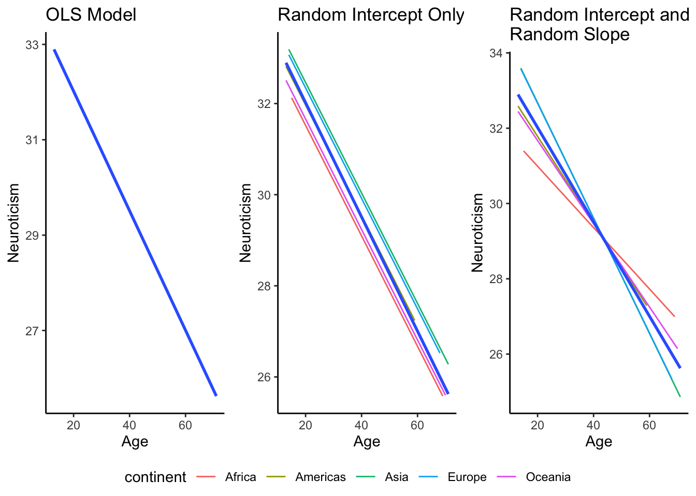
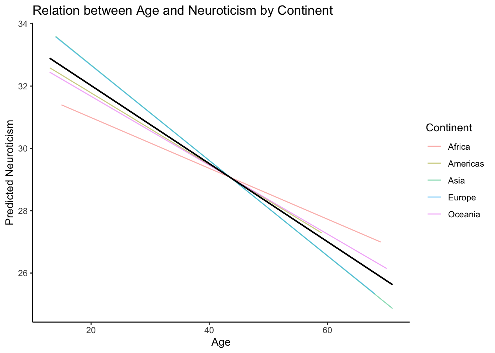

8 Multilevel Modeling
Remember that one of the assumptions of linear regression that we learned about in the last chapter was that our observations are independent from each other. However, in your research, you may be working with data that are instead clustered in some way - for example, you might have responses from students within the same classroom (students are clustered within the classroom), or repeated measures from the same individual across time or different trials in an experiment (multiple observations are clustered within the same individual).
In these cases, your data are no longer independent - observations from the same cluster are more likely to be similar to each other than observations from different clusters. This would be most obvious for repeated measurements from the same individual across time/trials - a single person is likely to respond or behave similarly across timepoints/trials, compared to the responses from a completely different person.
When you have clustered data like this, but you want to run a regression model, you would instead want to use a multilevel model (this can also be called hierarchical linear modeling or mixed effects models). This is because if you run a normal linear regression when you have clustered data, your model ignores the fact that your data are no longer independent, and so the standard errors it estimates are too small (which could lead to your inferential tests being too liberal!).
There are two popular packages you can use to run multilevel models in R: lme4 and nlme. I will focus on using lme4, although similar results can be obtained from nlme (which is more suited to nonlinear models). If you want more details on lme4, you can read this tutorial.
library(ggplot2) # for general data visualization
library(ggpubr) # for arranging plots
library(performance) # to calculate ICC
library(lme4) # for multilevel modeling
library(lmerTest) # useful for inferential tests in multilevel models, since lme4 does not return p-values8.1 Clarifying Some Terminology
As we discuss multilevel models, there are some two terms that need to be defined first:
Fixed effects: Fixed effects refer to the coefficients representing the relation between the predictors and outcome variable, averaged across clusters or groups. In other words, fixed effects describe the average values of the estimated parameters.
Random effects: Random effects describe which parameters are allowed to vary across the different groups or clusters. Not all parameters have to vary across groups or clusters - you can specify based on what you think is most likely.
Now those terms have been defined, let’s work through some multilevel models. For our examples, suppose that we wanted to examine the relation between age and Neuroticism (like we did before), but this time, we want to account for the fact that participants are clustered within continents (people from the same continent are likely to be more similar than people from other continents).
8.2 The Intra-Class Correlation Coefficient
Oftentimes, before running a multilevel model, it is useful to calculate an intra-class correlation coefficient (ICC). The intra-class correlation coefficient tells you how much of the variability in your outcome is due to the variability across different clusters. It ranges from 0 (no dependency in the data due to continents, e.g., people from the same continent are equally as similar as people from different continents) to 1 (complete dependency due to continents, so people from the same continent are exactly alike and are different than people from other continents),
The rule of thumb for the ICC is that greater than .05 is considered substantial variation (and thus, is an indication that a multilevel model might be more appropriate).
To calculate the ICC, we first need to run a model that contains only an intercept for our outcome, but also has a random intercept. This tells us how much difference there is in the expected value of our outcome across groups. We can then use the icc function from the performance package.
When specifying a mutlievel model with the function lmer, you write the regression formula like you normally would (e.g., dependent ~ indepdendent). To add random effects (i.e., to let parameters vary across groups/clusters), you simply add them in parentheses, by writing + (whatever parameters you want random effects on, separated by + signs | clustering variable).
# 1 represents the intercept, so I have no predictors in my model, just an intercept, but I want that intercept to vary across continents
interceptonly = lmer(NeuroSum ~ 1 + (1 | continent), data = big5)
icc(interceptonly)The ICC is 0.016, which means that about 1.6% of the variance in our outcome is due to differences between clusters (in this case, continents). This is less than the rule of thumb value of .05 that I mentioned before, but we will continue with our example regardless.
8.3 Running a Multilevel Model
8.3.1 Simple Multilevel Model
First, to provide a point of comparison, let’s run the regression model without accounting for the clustering. Note that I am using centered age in the model, just to have better interpretation of the intercept!
nocluster_model = lm(NeuroSum ~ age_centered, data = big5)
summary(nocluster_model)##
## Call:
## lm(formula = NeuroSum ~ age_centered, data = big5)
##
## Residuals:
## Min 1Q Median 3Q Max
## -20.1376 -5.1411 -0.0165 4.8568 16.6089
##
## Coefficients:
## Estimate Std. Error t value Pr(>|t|)
## (Intercept) 31.17400 0.30565 101.994 < 2e-16 ***
## age_centered -0.12535 0.02594 -4.832 1.81e-06 ***
## ---
## Signif. codes: 0 '***' 0.001 '**' 0.01 '*' 0.05 '.' 0.1 ' ' 1
##
## Residual standard error: 6.834 on 498 degrees of freedom
## Multiple R-squared: 0.04478, Adjusted R-squared: 0.04286
## F-statistic: 23.34 on 1 and 498 DF, p-value: 1.806e-06Now, let’s run the multilevel model. We will include random effects for both the intercept and the slope. What this means is that we think that different continents have different baseline levels of Neuroticism (random intercept), and that the relation between age and Neuroticism can differ across continents.
As a reminder, the way that we can specify random effects in lmer is by first specifying our usual regression model (e.g., NeuroSum ~ age), but then in parentheses, adding (1 + age | continent). The parentheses indicates that these are random effects, the | continent says that the grouping or clustering variable is the continent, and 1 indicates a random intercept while age indicates a random age effect.
cluster_model = lmer(NeuroSum ~ age_centered + (1 + age_centered | continent), data = big5)
summary(cluster_model)## Linear mixed model fit by REML. t-tests use Satterthwaite's method [
## lmerModLmerTest]
## Formula: NeuroSum ~ age_centered + (1 + age_centered | continent)
## Data: big5
##
## REML criterion at convergence: 3342.9
##
## Scaled residuals:
## Min 1Q Median 3Q Max
## -2.90826 -0.76895 -0.01166 0.71718 2.36771
##
## Random effects:
## Groups Name Variance Std.Dev. Corr
## continent (Intercept) 0.448075 0.66938
## age_centered 0.001588 0.03986 -1.00
## Residual 46.193981 6.79662
## Number of obs: 500, groups: continent, 5
##
## Fixed effects:
## Estimate Std. Error df t value Pr(>|t|)
## (Intercept) 31.13101 0.42713 4.54254 72.885 3.81e-08 ***
## age_centered -0.12264 0.03155 4.74889 -3.887 0.0128 *
## ---
## Signif. codes: 0 '***' 0.001 '**' 0.01 '*' 0.05 '.' 0.1 ' ' 1
##
## Correlation of Fixed Effects:
## (Intr)
## age_centerd -0.397
## optimizer (nloptwrap) convergence code: 0 (OK)
## boundary (singular) fit: see help('isSingular')What does this output tell us?
The fixed effects tell us the average effects in our population - e.g., on average, across continents, what is the intercept and slope of our model? These can be interpreted like normal regression coefficients: the intercept represents the expected level of Neuroticism for someone who is of average age, while the slope of age tells us that for every 1 year change in age, we expect a person’s Neuroticism to decrease by 0.12 points.
The random effects aren’t actually parameters that get estimated: instead, they are variances (and covariances) of the parameters that we have allowed to differ across continents. That is, the variance of the intercept term tells us how much we expect the intercept to vary across continents, the variance of the slope term tells us how much we expect the slope of age to differ across continents, and the correlation tells us how we expect a country’s intercept to relate to their slope of age.
Note: You might see that we had a warning message in our model - that the fit of our model is “singular”. This is likely because the variance of our random slope is close to 0 (.002), indicating that this slope doesn’t really differ across continents. This can lead to the singularity warning.
How does this differ from the regression results when we did not account for the clustering?
##
## OLS versus Multilevel Regression Results
## ============================================================
## Dependent variable:
## ----------------------------------------
## Neuroticism
## OLS linear
## mixed-effects
## OLS Model Multilevel Model
## ------------------------------------------------------------
## Constant 31.174*** 31.131***
## (0.306) (0.427)
##
## age_centered -0.125*** -0.123***
## (0.026) (0.032)
##
## ------------------------------------------------------------
## Observations 500 500
## R2 0.045
## Adjusted R2 0.043
## Log Likelihood -1,671.466
## Akaike Inf. Crit. 3,354.932
## Bayesian Inf. Crit. 3,380.220
## Residual Std. Error 6.834 (df = 498)
## F Statistic 23.344*** (df = 1; 498)
## ============================================================
## Note: *p<0.1; **p<0.05; ***p<0.01You’ll notice that our intercept and slope parameters are actually pretty much the same - in both cases, the intercept is around 31, and the slope is around -0.12. The only differences are in the standard errors of these parameters - the standard errors of the intercept and slope in the multilevel model (0.43 and 0.032, respectively) are larger than the standard errors in the regression model (0.31 and 0.026, respectively). In this case, this difference did not change the inferential results (e.g., the effect of age is still significant), but you could imagine that having a standard error that is too small may lead us to reject the null hypothesis incorrectly.
To visually illustrate the differences between a regression model, or a model with random intercept and slope, look at the graphs below.

In these graphs, the thick blue line represents the average trajectory - e.g., across all continents, what is the predicted relation between age and neuroticism. However, in the OLS model on the far right, the single line shown means that we expect this relation to hold for any individual in our sample, regardless of what continent they are from. In the model with a random intercept (middle), different continents are allowed to have different intercepts (random intercept) but the relation between age and neuroticism remains the same (fixed slope). This can be seen in how the different colored lines for each continent are parallel to each other, but just shifted vertically. Finally, the model with random intercept and random slope (far left), different continents are allowed to have both different intercepts and different slopes, which is represented by how the different colored lines have different starting points and different levels of steepness.
8.4 Visualizing a Multilevel Model
Since a multilevel model is just a regression model that accounts for clustering, you can use all the techniques we learned about in the previous chapter to visualize the regression models (e.g, using geom_smooth). However, we might also want to include different lines for each cluster (in this case, continent) to see how the intercepts and slopes differ across our different clusters.
To do this, we just add a new column to our dataset that includes the predicted values for each individual. These predicted values will take into account the differences in intercept/slope across the different continents, so we can just use different colored lines for each continent to see the differences in predicted regression equations.
# add a column of predicted values to your dataset
big5$mlm_predict = predict(cluster_model)
# the outcome variable is now our predicted values
ggplot(data = big5, aes(x = age, y = mlm_predict))+
geom_line(aes(color = continent), alpha = 0.5)+ # individual lines for each continent
geom_smooth(method = "lm", linewidth = 0.75, se = FALSE,
color = "black")+ # a predicted regression equation - this will be the regression equation based on fixed effects
theme_classic()+
labs(x = "Age", y = "Predicted Neuroticism", color = "Continent",
title = "Relation between Age and Neuroticism by Continent")